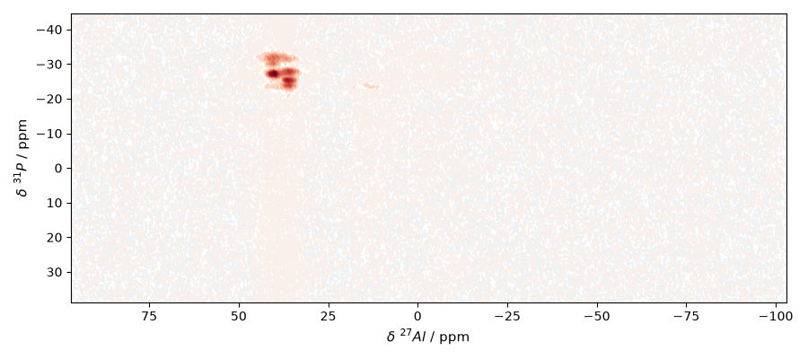
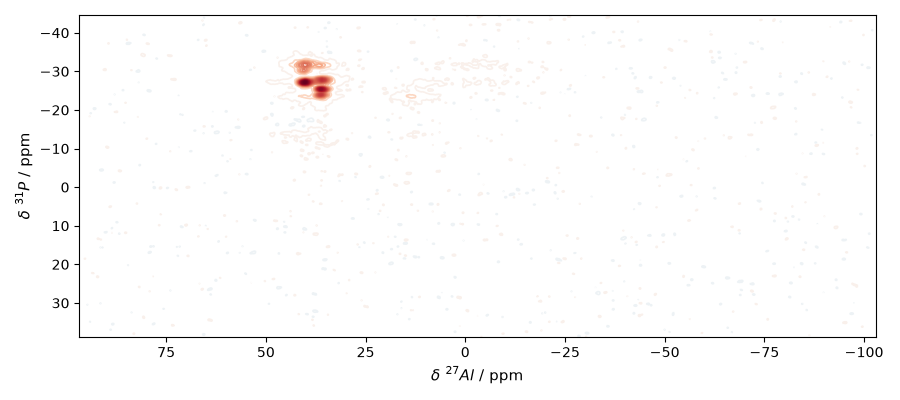
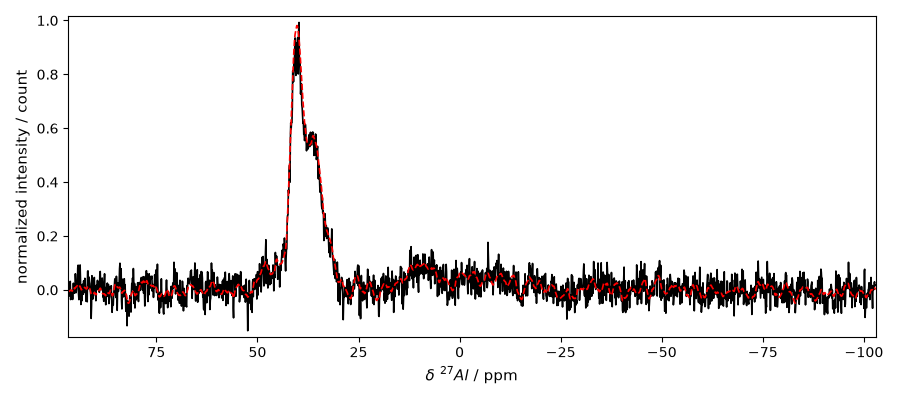
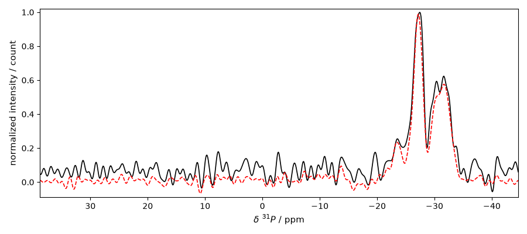
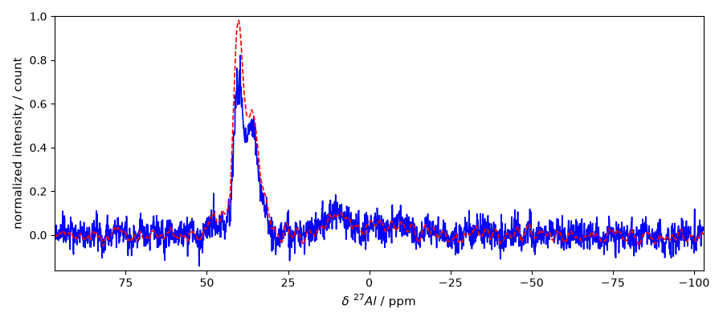

Note
Go to the end to download the full example code.
Validate 2D Bruker reconstruction against TopSpin pdata
This example compares a 2D Bruker raw ser dataset processed in
SpectroChemPy with the corresponding TopSpin processed reference stored in
pdata/1.
It is primarily intended as a validation/inspection tool for hypercomplex 2D NMR encodings. When a richer local validation dataset is available, it is used automatically. Otherwise the example falls back to the public bundled TopSpin 2D dataset.
Requires the official spectrochempy-nmr plugin.
Install with: pip install spectrochempy[nmr].
Import API
from pathlib import Path
import numpy as np
import spectrochempy as scp
from spectrochempy_nmr import Experiment
def _candidate_datasets():
"""Return validation candidates ordered from richest local data to public fallback."""
home = Path.home()
return [
{
"label": "Local Bruker validation dataset (eddy/151215/2)",
"base": home / "Dropbox/F.STORAGE/bruker/data/eddy/nmr/151215",
"expno": 2,
"lb_f2": 2.0,
"lb_f1": 2.0,
},
{
"label": "Bundled TopSpin validation dataset",
"base": scp.preferences.datadir
/ "nmrdata"
/ "bruker"
/ "tests"
/ "nmr"
/ "topspin_2d",
"expno": 1,
"lb_f2": 2.0,
"lb_f1": 5.0,
},
]
def _select_candidate():
"""Pick the first candidate that has both a raw SER and processed pdata."""
for candidate in _candidate_datasets():
expdir = candidate["base"] / str(candidate["expno"])
if (expdir / "ser").exists() and (expdir / "pdata" / "1").exists():
return candidate
msg = "No Bruker validation dataset with both ser and pdata/1 was found."
raise FileNotFoundError(msg)
def _magnitude(dataset):
"""Return magnitude for complex or quaternion datasets."""
if dataset.dtype.kind == "V":
import quaternion # noqa: PLC0415
return np.sqrt(np.sum(quaternion.as_float_array(dataset.data) ** 2, axis=-1))
return np.abs(dataset.data)
def _peak_coords(dataset):
"""Return the coordinates of the strongest peak."""
mag = _magnitude(dataset)
idx = np.unravel_index(np.argmax(mag), mag.shape)
return idx, float(dataset.y.data[idx[0]]), float(dataset.x.data[idx[1]])
Select a dataset
Bundled TopSpin validation dataset
/home/runner/.spectrochempy/testdata/nmrdata/bruker/tests/nmr/topspin_2d/1
Read the raw SER and the TopSpin processed reference
ser = scp.read_topspin(
candidate["base"], expno=candidate["expno"], remove_digital_filter=True
)
reference = scp.read_topspin(candidate["base"], expno=candidate["expno"], procno=1)
/home/runner/work/spectrochempy/spectrochempy/plugins/spectrochempy-nmr/src/spectrochempy_nmr/extern/nmrglue/_bruker.py:441: UserWarning: (196608,)cannot be shaped into(147, 1024)
_, data = read_binary(f, shape=shape, cplex=cplex, big=big, isfloat=isfloat)
Print a short summary
Process the raw SER in two stages
We match the TopSpin digital sizes using the reference spectrum shape.
f2_processed = Experiment(ser).process(
apodization="em",
lb=candidate["lb_f2"],
size=reference.shape[1],
)
reconstructed = (
f2_processed.zf_size(size=reference.shape[0], dim="y")
.em(lb=candidate["lb_f1"], dim="y")
.fft(dim="y")
)
/home/runner/work/spectrochempy/spectrochempy/src/spectrochempy/utils/numutils.py:29: RuntimeWarning: divide by zero encountered in log10
n_decimals = sigdigits - int(np.floor(np.log10(abs(n)))) - 1
/home/runner/work/spectrochempy/spectrochempy/src/spectrochempy/core/dataset/coord.py:902: RuntimeWarning: divide by zero encountered in scalar divide
(np.max(spacing) - np.min(spacing))
Compare strongest-peak positions
SpectroChemPy peak: index=(np.int64(810), np.int64(584)), y=-27.241, x=39.814
TopSpin peak: index=(np.int64(808), np.int64(580)), y=-27.078, x=40.204
Plot the reconstructed spectrum
_ = reconstructed.plot_map()

Plot the TopSpin processed reference

Compare a normalized F2 slice through the strongest peak
slice_y = ref_y
scp_slice = reconstructed[slice_y, :].normalize(method="max", dim="x")
ref_slice = reference[slice_y, :].normalize(method="max", dim="x")
scp_slice.title = "normalized intensity"
ref_slice.title = "normalized intensity"
_ = scp_slice.plot(color="black", ylabel="normalized intensity")
_ = ref_slice.plot(clear=False, color="red", linestyle="--")
slice_xlim = _.axes.get_xlim()

Compare a normalized F1 slice through the strongest peak
scp_column = reconstructed[:, ref_x].squeeze().normalize(method="max", dim="y")
ref_column = reference[:, ref_x].squeeze().normalize(method="max", dim="y")
scp_column.title = "normalized intensity"
ref_column.title = "normalized intensity"
_ = scp_column.plot(color="black", ylabel="normalized intensity")
_ = ref_column.plot(clear=False, color="red", linestyle="--")

Optional: simple manual phase touch-up for a closer visual overlay
The reconstruction above is intentionally shown as produced by the standard pipeline. If we want a closer visual match against the TopSpin reference, we can apply a small manual zero-order phase correction on F2 before comparing slices again. The exact value remains dataset-dependent.
reconstructed_phased = reconstructed.pk(phc0=30.0, phc1=0.0, dim="x", rel=True)
Compare the normalized F2 slice again after the manual phase touch-up
scp_slice_phased = reconstructed_phased[slice_y, :].normalize(method="max", dim="x")
scp_slice_phased.title = "normalized intensity"
_ = scp_slice_phased.plot(color="blue", ylabel="normalized intensity")
_ = ref_slice.plot(clear=False, color="red", linestyle="--", xlim=slice_xlim)

Total running time of the script: (0 minutes 7.911 seconds)